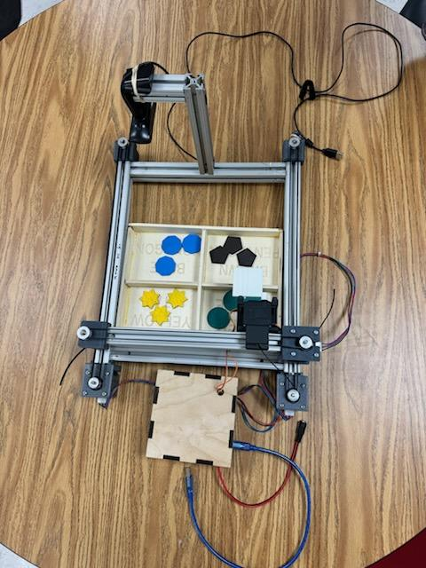
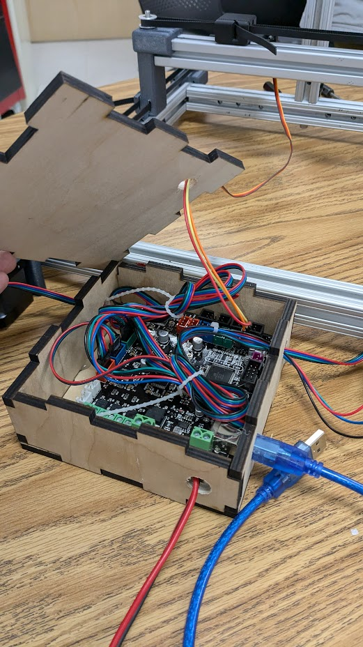
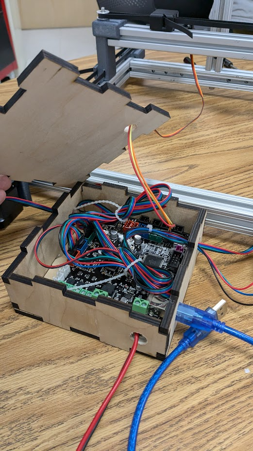

Project Overview
For this project, we implemented an object-sorting system using an existing deep learning algorithm trained in MATLAB R2024 to recognize four shapes: green circle, yellow star, brown pentagon, and blue nonagon. Depending on the detected image, the system moves the object to a pre-set location and activates a servo motor to drop it into its designated bin. The frame was built from 80-20 aluminum bars, all electronics were housed in a laser-cut box, and the system was fully programmed in MATLAB.
Watch the system in action: Sorting System Video
Below you can see the data training results and a sample of the images used to train the algorithm.

 
